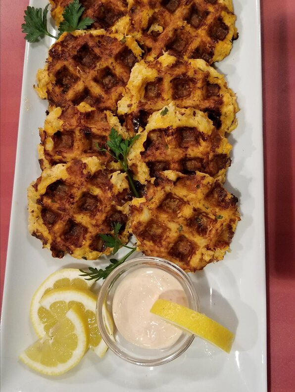

Crab Cakes

Descriptions:
These are the fastest, easiest crab cakes I have ever made and some of the best I have ever eaten! Serve with coarse mustard on the plate or your favorite mustard sauce.
Ingredients:
- 1 egg
- 3 tablespoons mayonnaise
- 4 teaspoons lemon juice
- ⅛ teaspoon red pepper flakes
- 1 teaspoon dried tarragon
- 1 tablespoon minced green onions
- 8 ounces crabmeat
- ½ cup crushed buttery round crackers
- 1 tablespoon butter
Steps:
- In a medium bowl, whisk together egg, mayonnaise, lemon juice,
red pepper flakes, tarragon, and scallions. Gently stir in crabmeat,
being careful not to break up meat. Gradually mix in cracker crumbs,
adding until desired consistency is achieved.
- Heat butter in a skillet over medium heat. Form crab mixture into
4 patties. Place patties in skillet, and cook until golden brown,
about 5 to 6 minutes on each side.